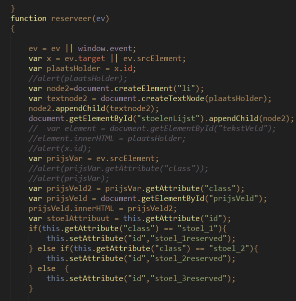
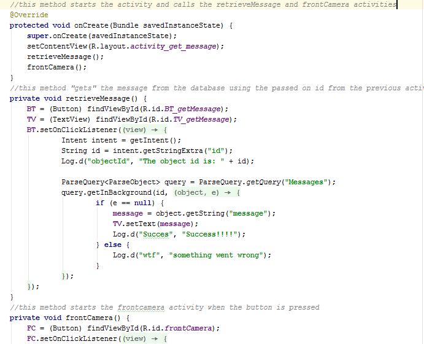

Leerdoelen
Leerdoel 1: Beter worden in programmeren:
Dit is de belangrijkste leerdoel van dit jaar, omdat het direct gekoppeld is aan mijn opleiding. Ik merk dat ik wel beter ben geworden met het programmeren, dat is te zien als we bijvoorbeeld de code die ik geschreven heb aan het begin van het jaar ga vergelijken met de code die ik aan het einde van het jaar heb geschreven. Dit is code die ik in periode 1 geschreven heb:
Er is veel dode code(code die niks doet), geen comments die uitleggen wat iets doet, en ik mix engelse woorden met nederlandse woorden.
En hier is een voorbeeld van code die ik deze periode geschreven heb:
Dit is code van de laatste periode. Er is te zien dat hier geen dode code in zit, en ik maak ook gebruik van comments om uit te leggen wat er gebeurt.
Leerdoel 2: Dingen minder uitstellen:
Deze leerdoel is wat minder goed gegaan dan de vorige, maar er is wel sprake van verbetering vergeleken met vorig jaar bijvoorbeeld. Ik heb inlevermomenten en datum van tentamens altijd in mijn agenda gezet, maar dat heb ik helaas niet voor alles gedaan. En ik heb ook voor belangrijke dingen post-it notes op mijn monitor geplakt om mezelf te herinneren dat ik iets moest maken of leren.